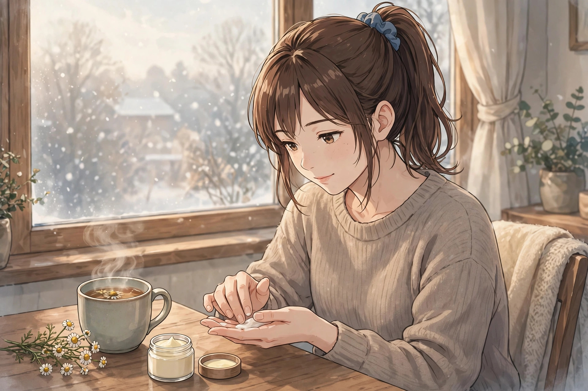

手荒れ・指先のケア
女性のお悩みコラム 第11回｜ステラポラリス東三国

指先のカサつきは、冬の暮らしからのサイン
「水仕事のあと、指先がカサカサして引っかかる」「ささくれができて、ストッキングに引っかかる」――11月下旬、暖房の乾燥と水仕事が重なるこの時期、手荒れや指先のカサつきを感じる方が増えます。手は毎日、水・洗剤・冷たい空気にさらされ、体の中でも負担がかかりやすい場所です。さらに、寒さで手先の血の巡りが落ちると、指先は冷えて乾燥しやすくなります。このコラムでは、医学・東洋医学・アロマ・ハーブ・薬膳の5つの視点から、手荒れと指先のケアの仕組みを見つめ、毎日の暮らしに取り入れやすいケアをご紹介します。
医学の視点：皮膚のバリアと、水仕事の負担
手の皮膚は、表面の角質層が水分を保ち、外からの刺激から体を守るバリアの役割を果たしています。冬は空気が乾燥し、暖房で室内の湿度も下がるため、角質層の水分が失われやすくなります。さらに、食器洗いや掃除などの水仕事では、洗剤や熱いお湯が皮膚の油分を洗い流し、バリアの働きが弱まりやすくなります。バリアが弱まると、皮膚はカサつき、ひび割れやささくれができやすくなります。寒さで手先の血管が収縮すると、指先への血流も落ち、皮膚に栄養や水分が届きにくくなることも知られています。医学の視点からの基本は、「洗いすぎないこと」と「失った油分と水分をこまめに補うこと」です。お湯は熱すぎない温度にし、洗剤を使うときは手袋を使う、洗ったあとはやさしく水気を拭き取ってすぐに保湿する、といった小さな習慣の積み重ねが土台になります。
東洋医学の視点：皮膚は「肺」とつながる場所
東洋医学では、皮膚は「肺」の働きと深くつながると考えます。「肺は皮毛をつかさどる」と言われ、肺の働きが整っていると皮膚はうるおいを保ちやすいとされています。冬の乾燥した空気は肺を乾かしやすく、皮膚のカサつきにもつながると考えられています。また、血が不足する「血虚（けっきょ）」の状態では、指先まで血が届きにくく、爪が割れやすくなったり、指先がカサつきやすくなったりするとされています。指先のケアで知られるツボに「合谷（ごうこく）」があります。親指と人さし指の骨が交わるあたりの、手の甲側にあるツボで、手の疲れや指先のこわばりを感じたときに、反対の手の親指でやさしく押すケアに広く使われてきました。手のひらの真ん中にある「労宮（ろうきゅう）」も、手を温めるときに意識されるツボです。手のひら同士をこすり合わせて温め、労宮を包み込むようにすると、手全体がほっと温まります。
アロマの視点：香りに包まれて、手をいたわる時間
アロマの楽しみは、香りに包まれながら手をいたわる時間を作ることにもあります。ラベンダーの精油は、穏やかな花の香りが特徴で、就寝前のくつろぎ時間によく使われます。ゼラニウムの精油は、バラに似た甘い香りで、女性の暮らしになじむ香りとして親しまれてきました。フランキンセンスの精油は、深みのある樹脂の香りで、冬の落ち着いた時間に向いています。手軽な使い方は、キャリアオイル（ホホバオイルやスイートアーモンドオイルなど）小さじ1に精油を1滴混ぜ、手のひらで温めてから指先までやさしくなじませる方法です。爪のまわりや指の関節にも、くるくるとなじませると気持ちよく続けられます。お風呂に入るときは、精油を2〜3滴、キャリアオイルやはちみつに混ぜてから湯に入れると、香りがふわりと広がります。精油は原液を直接肌につけないこと、妊娠中の方や持病のある方、お薬を使っている方は使用前に専門家へ相談することなど、一般的な注意を守って楽しんでください。
ハーブの視点：温かい一杯と、手を温めるハンドバス
ハーブティーは、温かい飲み物そのものが体を内側から温めてくれる、暮らしに取り入れやすい方法です。カモミールティーは、りんごのような甘い香りが特徴で、夜のくつろぎ時間によく使われます。ローズヒップティーは、ほどよい酸味と赤い色が特徴で、ビタミンCを含むハーブとして知られています。エルダーフラワーティーは、マスカットのような甘い香りで、冬の温かい一杯として親しまれてきました。目安は1日1〜2杯。ハーブティーを飲む時間を「手をいたわる時間」と重ねると、手のケアの習慣が自然に身につきます。ハーブの楽しみは飲むだけではありません。カモミールのハーブティーを少し濃いめに作り、冷ましてから洗面器に入れ、手を2〜3分浸すハンドバスも、手先をやさしく温める方法として知られています。キク科の植物にアレルギーのある方は、カモミールを避けてください。
薬膳の視点：血を養い、うるおいを与える食卓
薬膳の考え方では、手荒れや指先のカサつきには「血を養う食材」と「体にうるおいを与える食材」が向いているとされています。血を養う食材の代表は、黒ごま・黒豆・なつめ・ほうれん草・にんじんなどです。黒ごまは、ご飯にふりかけたり、すりごまにして和え物に加えたりと、毎日の食卓に取り入れやすくなります。なつめは、スープやお粥に入れて楽しめます。うるおいを与える食材としては、白きくらげ・梨・はちみつ・山芋などが挙げられます。白きくらげは、水で戻してスープやデザートに使うと、ぷるんとした食感を楽しめます。冬の食卓では、黒豆の煮物やなつめ入りのお粥、白きくらげのスープといった、体を内側からいたわるおかずを一品増やすのがおすすめです。冷たい飲み物の飲みすぎは体を冷やしやすいため、冬は温かいものを中心にするのが薬膳の考え方です。
セルフケアのポイント
- ハンドクリームを塗るタイミング：水仕事のあと・外出前・就寝前の1日3〜4回を目安に。洗ったあとは水気をやさしく拭き取り、乾く前に塗るのがポイントです。爪のまわりや指の関節にも、くるくるとなじませましょう。
- 水仕事は手袋で守る：食器洗いや掃除のときはゴム手袋を使い、長時間の水仕事を避ける。熱すぎるお湯は皮膚の油分を落としやすいため、ぬるめのお湯を心がけましょう。
- 合谷・労宮を押して温める：1日2〜3回、合谷を反対の手の親指で5秒押して離す動きを5回ほど。手のひら同士を10回ほどこすり合わせて温め、労宮を包み込むようにすると、手全体が温まります。
- 綿の手袋で夜のケア：就寝前にハンドクリームを塗り、綿100％の薄手の手袋をはめて眠ると、乾燥から手を守る時間を作れます。週2〜3回を目安に。
- 爪とささくれのケア：ささくれは引っ張らず、清潔な爪切りで根元から切りましょう。爪の形は角を丸く整え、爪やすりは一方向にかけるのがポイントです。週1回を目安に。
当サロンでのケア
手荒れや指先のカサつきが気になる方には、手先から全身の巡りを整えるケアが向いています。当サロンでは、手首から腕まわりをゆるめるケアと、全身をオイルでゆるめるアロマオイルマッサージを組み合わせ、施術のあとに「手先が温まった」「指先が軽くなった」と感じやすい状態を目指します。手や腕と関わりの深いお悩みページもあわせてご覧ください。
受診の目安
手荒れの多くは乾燥や水仕事によるものですが、中には医療機関への相談が向いている場合もあります。ひび割れから血が出る、水ぶくれや強いかゆみがある、赤みや腫れが広がる、手の甲や指の関節が腫れて曲げにくい、ケアを続けても数週間以上よくならない、といった場合は早めに皮膚科へご相談ください。気になる症状が続くときは、施術の前に医療機関でご相談いただくことをおすすめします。
施術者について
平賀建人（施術歴30年）
鍼灸師・登録販売者・アロマセラピスト・パーソナルトレーナーの資格を持ち、美容整体を中心に、アロマオイルマッサージ、もみほぐしを、その日の状態とご希望に合わせて組み合わせて施術します。このコラムは、施術者の知識と経験をもとに作成しています。
この記事で紹介したケアに使えるもの
PR（アフィリエイト広告を含みます）

手指衛生の基本から手荒れとハンドケアの知見までを解説した一冊です。記事の医学の視点やハンドケアのタイミングの参考に。

ユースキン ハンドクリーム 80g（40g×2個）ミッフィーデザイン チューブタイプ（指定医薬部外品）
持ち歩きやすいチューブタイプのハンドクリームです。記事の「ハンドクリームを塗るタイミング」でご紹介した、外出先でのケアにも。

ユースキン ハンドクリーム ポンプタイプ 180g+4gおまけ付き（指定医薬部外品）
洗面所やキッチンに置いて、水仕事のあとに片手で押せるポンプタイプです。記事の「水仕事は手袋で守る」「ハンドクリームを塗るタイミング」のケアに。